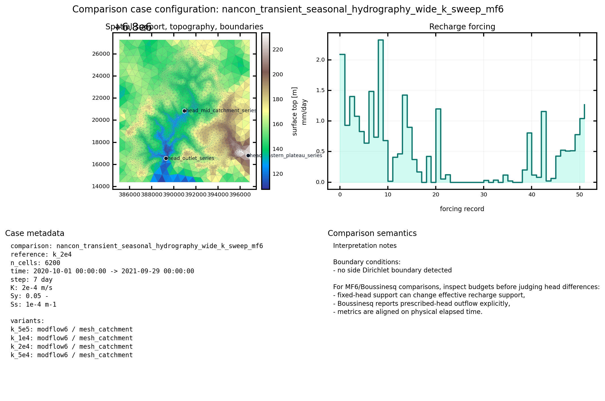
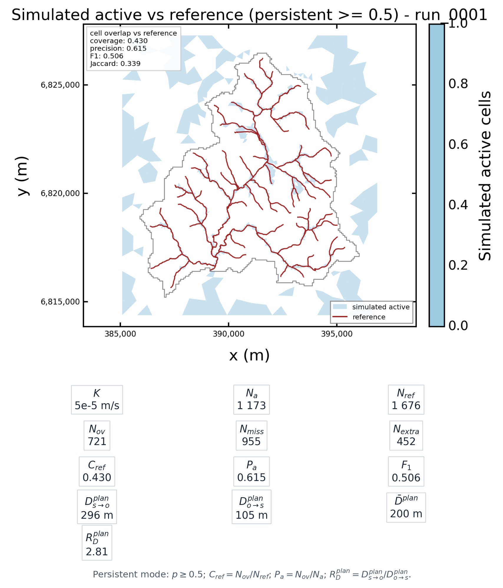
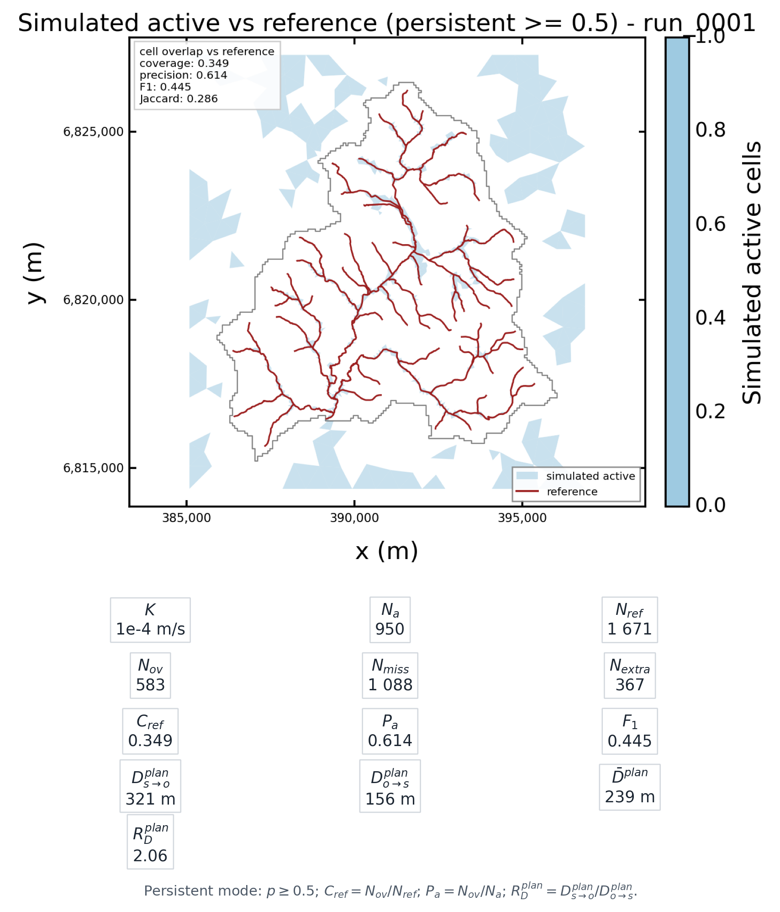
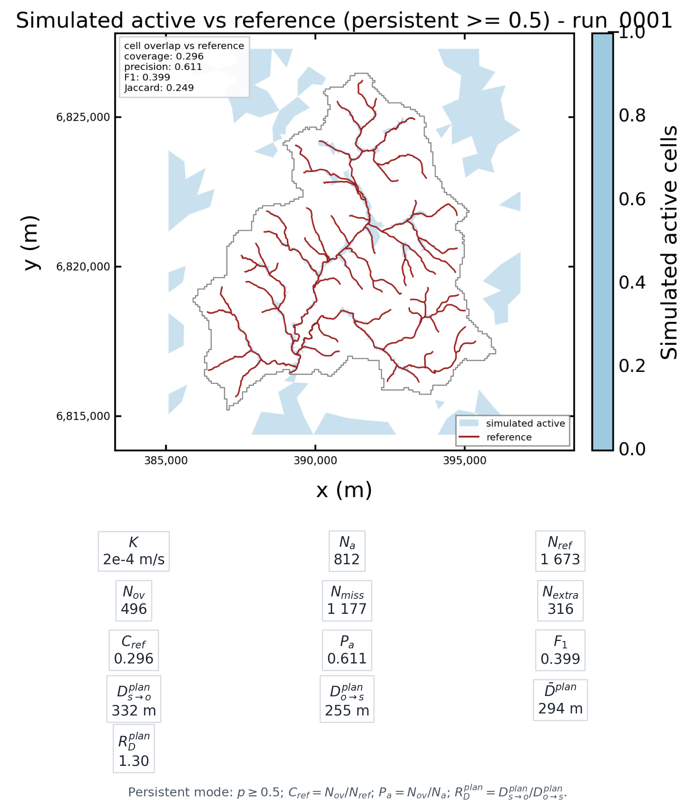
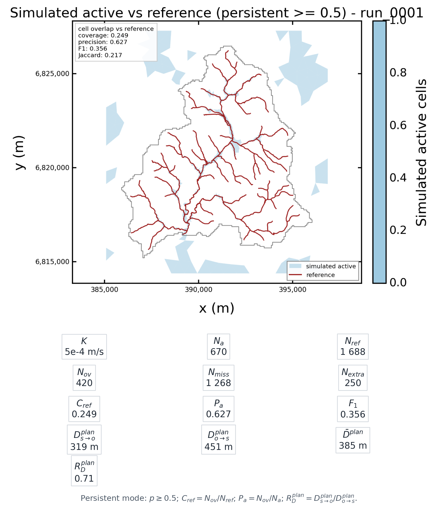
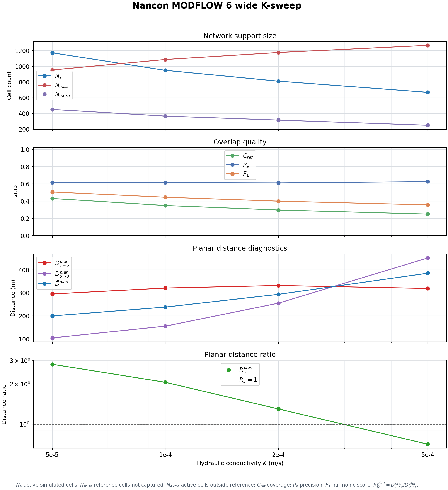
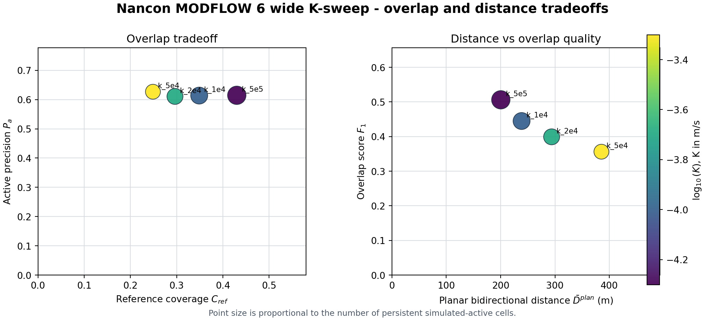

Nancon K-Sweep Results#
Purpose#
This page keeps one concrete simulation result close to the streams and seepage concepts. It is not a calibration result. It is a visual and numerical development case used to inspect how the simulation-derived active network changes when hydraulic conductivity varies.
This is the MODFLOW 6 real-basin example for the conceptual sequence:
solved head -> local drain/seepage outflow -> accumulation_flux
-> persistent simulated-active mask -> overlap against reference
Use it after Conceptual Model and Worked Examples, not before. The conceptual pages explain why the active network is a diagnostic derived from seepage or drainage outflow, while this page shows how that diagnostic behaves in one concrete parameter sweep.
The comparison target is the observed reference hydrographic network. If a
run has no reference network, the simulated-active overlap comparison is
skipped; HydroModPy does not silently compare against the DEM-derived
generated network.
Parameter Range#
This sweep is aligned with the higher-conductivity Nancon parameter examples,
especially the F family in
examples/projects/09_comparison_workflow/run_nancon_parameter_sweep.py.
The range is deliberately widened around that family so that the visual
sensitivity of the simulated active network is easier to inspect.
The sweep uses:
K = 5e-5, 1e-4, 2e-4, 5e-4 m/sSs = 1e-4 m-1Sy = 0.05drainage conductance
= 3e-3 m2/smodflow6.tgrid.firstpersteady = false
k_2e4 is only the reference simulation for head-map difference plots. The
stream comparison below always compares each simulated-active network against
the observed reference hydrographic network.
For a wider sensitivity reading, use Network Metrics And Extreme K-Sweep.
That page adds lower and higher K values around the present range and keeps
the failed high-K stress case explicit.
Run Command#
From the repository root:
python examples/projects/09_comparison_workflow/run_comparison_example.py --case nancon-seasonal-hydrography-k-sweep-mf6
The run writes results under:
examples/projects/09_comparison_workflow/outputs/nancon_transient_seasonal_hydrography_wide_k_sweep_mf6/
The main files to inspect are:
simulated_active_network_metrics.csvsimulated_active_network_overlap_metrics.csvsimulated_active_network_distance_metrics.csvrun_figures/<simulation_id>/simulated_active_network_reference_overlay.pngcomparison_report.mdcomparison_audit.md
After rerunning the workflow, refresh the committed documentation figures with:
python docs/source/theory/streams_and_seepage/diagrams/render_nancon_k_sweep_doc_figures.py --sweep wide
This script reads the CSV exports above and regenerates both the annotated overlay figures and the metric-evolution graph. The metric values shown below therefore come from the workflow outputs, not from hand-edited image labels.
Case Configuration#
{kind=link}

Fig. 89 Common comparison support for the four MODFLOW 6 simulations.#
Simulations#
Simulation |
K |
Interpretation |
|---|---|---|
|
|
wider saturated branch |
|
|
low value from the higher-conductivity Nancon |
|
|
middle value from the higher-conductivity Nancon |
|
|
wider dry branch |
Overlap Metrics#
The table below compares the simulated active network of each simulation against
the observed reference linework. The mode is persistent because this is
a transient run; cells active for at least 50% of timesteps are retained.
Simulation |
K |
Active cells |
Missing ref. |
Extra active |
Coverage |
Precision |
F1 |
|---|---|---|---|---|---|---|---|
|
|
1173 |
955 |
452 |
0.430 |
0.615 |
0.506 |
|
|
950 |
1088 |
367 |
0.349 |
0.614 |
0.445 |
|
|
812 |
1177 |
316 |
0.296 |
0.611 |
0.399 |
|
|
670 |
1268 |
250 |
0.249 |
0.627 |
0.356 |
Planar Distance Metrics#
The table below is produced by
simulated_active_network_distance_metrics.csv. It is a planar
cell-centroid diagnostic, not the downslope DEM-routing criterion.
Simulation |
K |
Sim -> ref mean m |
Ref -> sim mean m |
Bidirectional mean m |
Quadratic mean m |
|---|---|---|---|---|---|
|
|
295.5 |
105.1 |
200.3 |
313.7 |
|
|
321.1 |
156.0 |
238.5 |
357.0 |
|
|
332.1 |
255.5 |
293.8 |
419.0 |
|
|
319.4 |
451.5 |
385.4 |
553.0 |
What To Read In These Metrics#
Increasing
Kcontracts the persistent simulated-active extent: active cells decrease from 1173 to 670.The contraction reduces extra active cells, but it also misses more of the observed reference network.
Precision stays around 0.61, while coverage drops from 0.430 to 0.249.
The planar bidirectional distance increases from 200 m to 385 m as the simulated active network contracts away from parts of the observed network.
This confirms the visual effect requested for development: the simulated network is much less saturated than the earlier low-K sweep. It also shows that matching the observed linework will require a real calibration protocol, not only increasing
K.
Metric Notation#
The figure band below each map uses the following notation:
\(N_a\): number of persistent simulated-active cells.
\(N_{ref}\): number of cells intersected by the observed
referencenetwork.\(N_{ov}\): number of cells that are both simulated-active and intersected by the
referencenetwork.\(N_{miss}\): reference cells not captured by the simulated-active network.
\(N_{extra}\): simulated-active cells outside the reference-network support.
\(C_{ref}=N_{ov}/N_{ref}\): reference-network coverage.
\(P_a=N_{ov}/N_a\): simulated-active precision.
\(F_1=2 C_{ref} P_a/(C_{ref}+P_a)\): harmonic overlap score.
\(D^{plan}_{s\to o}\): mean planar distance from simulated-active cells to the observed
referencenetwork.\(D^{plan}_{o\to s}\): mean planar distance from observed
reference-network cells to the simulated-active support.\(\bar{D}^{plan}\): symmetric mean of the two directional planar distances.
\(R_D^{plan}=D^{plan}_{s\to o}/D^{plan}_{o\to s}\): planar distance ratio. A value close to 1 means that the two directional distances have the same order of magnitude. This is only a planar proxy for the article-style optimum, not the downslope criterion itself.
Visual Sweep#
Each map below is regenerated by
render_nancon_k_sweep_doc_figures.py. The top part is the standard
simulated_active_network_reference_overlay figure. The metric band under
the map is assembled from simulated_active_network_overlap_metrics.csv and
simulated_active_network_distance_metrics.csv.
K = 5e-5 m/s: wider saturated branch#
{kind=link}

Fig. 90 k_5e5: \(N_a=1173\), \(C_{ref}=0.430\),
\(P_a=0.615\), \(F_1=0.506\),
\(\bar{D}^{plan}=200\) m.#
K = 1e-4 m/s: Nancon F low#
{kind=link}

Fig. 91 k_1e4: \(N_a=950\), \(C_{ref}=0.349\),
\(P_a=0.614\), \(F_1=0.445\),
\(\bar{D}^{plan}=239\) m.#
K = 2e-4 m/s: Nancon F middle#
{kind=link}

Fig. 92 k_2e4: \(N_a=812\), \(C_{ref}=0.296\),
\(P_a=0.611\), \(F_1=0.399\),
\(\bar{D}^{plan}=294\) m.#
K = 5e-4 m/s: wider dry branch#
{kind=link}

Fig. 93 k_5e4: \(N_a=670\), \(C_{ref}=0.249\),
\(P_a=0.627\), \(F_1=0.356\),
\(\bar{D}^{plan}=385\) m.#
Metric Evolution#
{kind=link}

Fig. 94 Evolution of support size, overlap quality, planar distance metrics, and
the positive distance ratio \(R_D^{plan}\) across the completed K
values. The horizontal reference line marks \(R_D^{plan}=1\).#
{kind=link}

Fig. 95 Tradeoff view: coverage versus precision, then \(\bar{D}^{plan}\) versus \(F_1\). Point size is proportional to \(N_a\).#
Current Limitation#
This run is useful for visual development, but the audit is intentionally strict and reports small mesh differences between simulations. For a clean K-only protocol, the next step is to freeze and reuse exactly the same mesh for every simulation, then rerun the same sweep.
The overlap metric is cell-based: it rasterizes the observed reference
linework onto the model mesh and compares it with simulated active cells. The
new distance export adds a second, planar diagnostic based on bidirectional
cell-centroid distances. A future calibration metric should still add the
bidirectional downslope criterion used by [Abhervé et al., 2023], where the
simulated seepage network is compared to the observed stream network through
simulated-to-observed and observed-to-simulated flowpath distances.
The current CSVs therefore contain a useful planar distance ratio,
planar_distance_ratio and planar_distance_log10_ratio. They can show
an optimum-like crossing when
\(D^{plan}_{s\to o}\) decreases while
\(D^{plan}_{o\to s}\) increases, or conversely. They are not
\(r_{optim}\) from the article because \(r_{optim}\) must be computed
from downslope flowpath distances and normalized by the DEM resolution.